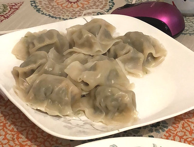

Dumplings

Photo taken from https://www.flickr.com/photos/155388070@N07/43303533072
Simple and short dumplings recipe for everyone
Ingredients
- 1 cup all-purpose flour
- 2 teaspoons baking powder
- 1 teaspoon white sugar
- 1 tablespoon butter or margarine
- ½ teaspoon salt
- ½ cup milk
Recipe
- Stir together flour, baking powder, sugar, and salt in a bowl.
- Cut in butter until mixture is crumbly. Stir in milk and mix until a batter forms that is thick enough to be scooped with a spoon. Allow batter to rest for 3 to 5 minutes.
- Drop batter by spoonfuls into boiling stew or soup. Cover and simmer without lifting the lid for 15 minutes.
Enjoy!
Home